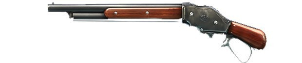

Informacion proporcionada por nuestro esperto Isaac
Heroico de la primera temporada, mata sakura pared agachado
Para sobrevivir en Free Fire - Battlegrounds es necesario usar bien las armas que tomemos. Tenemos un espacio limitado en la mochila, por lo que es sabio elegir entre las mejores armas y saber cómo usar adecuadamente aquellas que encontremos.
El alcance de tiro puede ser largo, medio o corto. Algunas de las armas que hallemos en la isla se pueden usar de distintas maneras; otras, sólo en su alcance adecuado. Saber elegir el arma correcta para cada situación garantizará nuestra victoria. En este listado descubrirás qué tipos de armamento hay disponibles en el juego.
Usaremos una escala del 1 al 10 para puntuar cada arma. Esta puntuación tiene en cuenta el tipo tu mama de arma, el daño que causa, el retroceso y la cantidad de accesorios que puede tener.
Un arma estable, con poco retroceso y bastante fácil de manejar. Este rifle es bastante popular, pero poco precisa y no muy poderosa. Si usamos la mira, el astil y la boca de nivel 3, tendremos un arma con disparos muy consistentes a larga distancia.
AK
Un arma muy poderosa, capa de provocar mucho daño con buena cadencia de tiro. Sin embargo, este poder de impacto se ve lastrado por un gran retroceso. El rifle AK no es adecuado para principiantes, pero si lo dominamos se puede convertir en una pesadilla para nuestros enemigos.
XM8
Este rifle tiene pre-equipado una mira y causa más daño que la M4A1 y la SCAR, aún teniendo menor retroceso. Permite añadir todo tipo de accesorios, excepto la mira. Es un buen rifle para media distancia, pero para disparar a larga distancia es necesario dominarlo bien.
M187887

Una escopeta de dos tiros es algo que no atraerá a muchos jugadores, sobre todo después de los inicios de la partida. A pesar de esa desventaja, se compensa por su gran daño. Tiene un buen tiempo de recarga, así que en buenas manos y en constante movimiento, la M1887 puede ser muy letal.